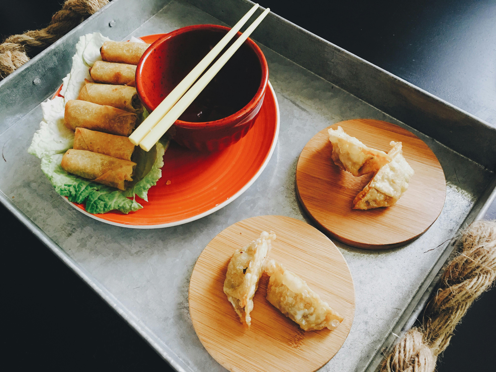

Sekret idealnego ramenu
Dowiedz się, jak przygotowujemy nasz kultowy ramen – bulion gotowany przez 12 godzin, ręcznie robiony makaron i aromatyczne dodatki. Zobacz nasze dania.
Czytaj więcejPołączenie tradycji Dalekiego Wschodu z nowoczesnym podejściem do gotowania. Odkryj wyjątkowe dania przygotowane z pasją przez naszych mistrzów kuchni.
Restauracja YAMI narodziła się z fascynacji kuchnią Azji – miejscem, gdzie smak, kolor i zapach tworzą niepowtarzalną harmonię. Naszą misją jest przeniesienie tej harmonii na talerz każdego Gościa. Od delikatnego sushi po pikantne curry – każdy posiłek w YAMI to podróż przez japońskie, tajskie i koreańskie tradycje kulinarne.
Zespół naszych kucharzy to prawdziwi artyści – szkoleni w najlepszych restauracjach Tokio i Bangkoku. Korzystamy wyłącznie ze świeżych, autentycznych składników: japońskiego ryżu, tajskich przypraw i lokalnych warzyw od zaufanych dostawców. Wierzymy, że smak tworzy się nie tylko w kuchni, ale także w atmosferze – dlatego wnętrze YAMI zaprojektowaliśmy w stylu minimalistycznym, z nutą orientu, byś mógł w pełni zanurzyć się w azjatyckim doświadczeniu.
Oprócz klasycznego menu oferujemy catering, warsztaty kulinarne oraz wyjątkowe kolacje degustacyjne, podczas których poznasz historię potraw i filozofię „umami”. Dla nas jedzenie to emocje – chcemy, by każdy posiłek w YAMI był chwilą, do której chętnie wrócisz.
Zapraszamy do świata, w którym smaki Dalekiego Wschodu spotykają się z gościnnością serca Warszawy.

Nasze menu łączy klasykę japońskiego sushi z nowoczesnymi interpretacjami kuchni azjatyckiej. Serwujemy świeże sashimi, rameny, pad thai i potrawy fusion, które zachwycają smakiem i estetyką podania. Każde danie przygotowujemy z dbałością o detale, korzystając z lokalnych składników oraz importowanych produktów premium z Japonii i Tajlandii. Restauracja YAMI to idealne miejsce zarówno na szybki lunch, jak i romantyczną kolację w eleganckim, nastrojowym wnętrzu.

Organizujesz spotkanie firmowe, przyjęcie rodzinne lub bankiet? Nasz catering to doskonały wybór dla tych, którzy cenią egzotyczny smak i profesjonalną obsługę. Oferujemy pełne menu azjatyckie: sushi zestawy, sałatki z mango, pierożki gyoza, tempurę i aromatyczne zupy pho. Dostosowujemy się do indywidualnych potrzeb klienta, zapewniając zarówno estetykę, jak i logistykę dostawy. Nasze potrawy przyciągają uwagę nie tylko smakiem, ale także wyglądem – idealne na każde wydarzenie.
Chcesz nauczyć się przygotowywać sushi, ramen lub tajskie curry? Nasze warsztaty kulinarne prowadzone są przez doświadczonych szefów kuchni, którzy pokażą Ci tajniki autentycznych technik azjatyckiego gotowania. Każde zajęcia to praktyczne doświadczenie – od wyboru składników po finalne podanie. Uczestnicy opuszczają warsztaty z certyfikatem i nowymi umiejętnościami, a przede wszystkim z pasją do gotowania. To doskonały pomysł na prezent.

Dowiedz się, jak przygotowujemy nasz kultowy ramen – bulion gotowany przez 12 godzin, ręcznie robiony makaron i aromatyczne dodatki. Zobacz nasze dania.
Czytaj więcejPoznaj proces tworzenia sushi przez naszych mistrzów kuchni – od wyboru ryby po precyzyjne krojenie i układanie rolek. Dowiedz się więcej o nas.
Czytaj więcejOdkryj przyprawy, które stanowią podstawę kuchni azjatyckiej: imbir, galangal, trawę cytrynową, pastę miso i sos sojowy. Przeczytaj inne artykuły.
Czytaj więcejTak, oferujemy zarówno odbiór osobisty, jak i dostawę w promieniu 10 km od restauracji.
Oczywiście! Nasze menu zawiera szeroki wybór potraw wegańskich i wegetariańskich, takich jak sushi z awokado czy tofu ramen.
Zapisy odbywają się przez formularz w sekcji Kontakt lub bezpośrednio w lokalu.
poniedziałek: 12:00-22:00
wtorek: 12:00-22:00
środa: 12:00-22:00
czwartek: 12:00-22:00
piątek: 12:00-23:00
sobota: 12:00-22:00
niedziela: nieczynne